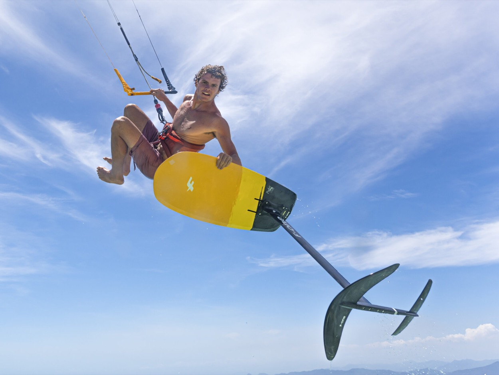
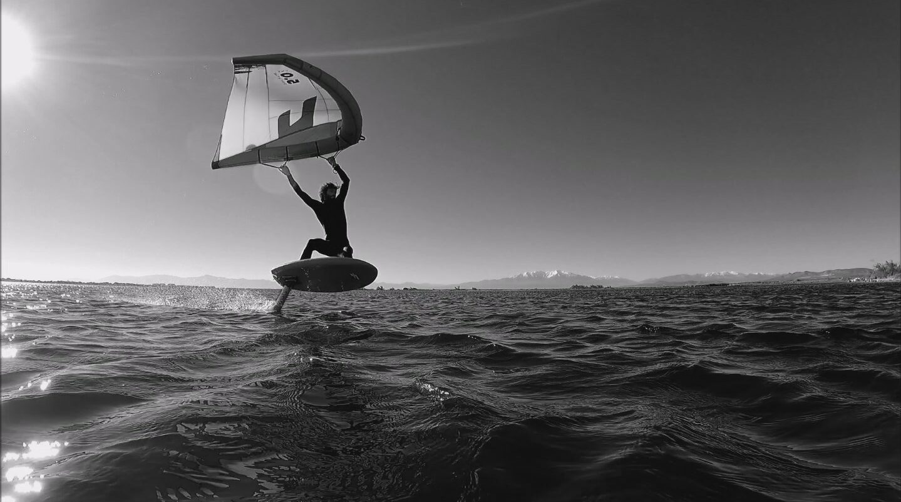
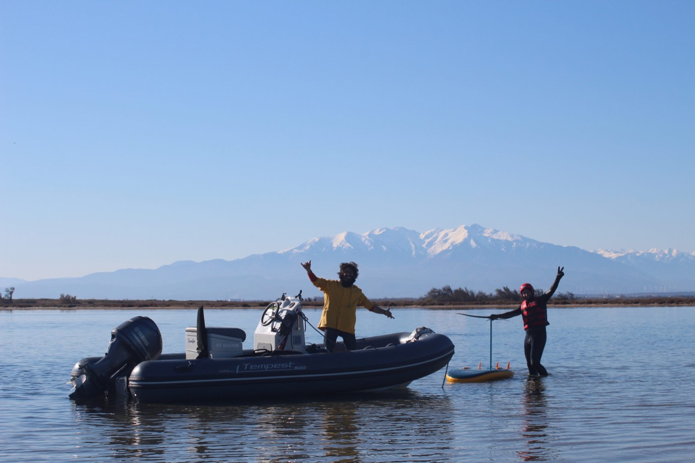

Escuela 100 % foil · Port Leucate
Wing foil, kite foil, simulador remolcado: Coriolis es la escuela especialista en foil de Leucate. Un deslizamiento sutil, silencioso, casi mágico — a tu alcance desde la primera sesión.
El foil

El vuelo, en silencioComo un avión, bajo la superficie
El foil se compone de un ala delantera y un estabilizador unidos a la tabla por un mástil. Con solo unos nudos de velocidad, la sustentación te eleva: navegas un metro por encima del agua, sin ruido, sin esfuerzo, incluso con viento muy suave.
Tu primera sesión
El simulador remolcado por barco: sin ala que manejar, solo tú, la tabla y el foil. La mejor puerta de entrada al vuelo.
Las clases
Remolcado por barco45 min de vuelo puro
Iniciación & perfeccionamientola modalidad que arrasa
Para kitersautónomos en twintip
Tarifas
Las sesiones de simulador duran 45 minutos, en grupos de 3 personas como máximo. Temporada baja de abril a noviembre, temporada alta en julio y agosto. Contacta con la escuela para las tarifas de wing foil y kite foil de la temporada en curso.

El equipo, al final de la sesiónPreguntas frecuentes
No. El simulador remolcado está pensado justo para eso: sin ala que manejar, el barco proporciona la tracción y tú te concentras en el equilibrio y el vuelo. Muchos vuelan desde la primera sesión.
Es un deslizamiento suave y poco lesivo para el cuerpo cuando está bien supervisado: casco, chaleco, una zona de navegación adecuada y una progresión gradual forman parte del método Coriolis.
El wing es más sencillo de manejar y perfecto en las lagunas; el kite foil ofrece más velocidad y finura, pero requiere ser ya autónomo en kitesurf twintip.
Esa es la belleza del wake foil: el barco sustituye al viento. Los días de calma se convierten en días de vuelo.
Contacto
Luc te responde rápidamente para diseñar tu itinerario de vuelo — desde el primer ride remolcado hasta el foil autónomo.